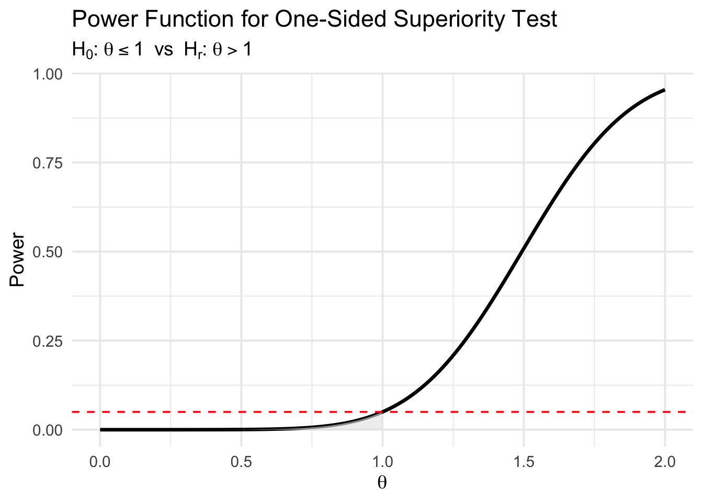

In the typical hypothesis testing situation in political science, the researcher posits a theoretically interesting hypothesis \(H_r\), often called the “alternative” or “research” hypothesis.
Definition 1 A research hypothesis, denoted by \(H_r\), is a claim that a quantity of interest \(\theta\) lies in a specific region \(B \subset \mathbb{R}\).
The first step in hypothesis testing requires the researcher to precisely state the prediction that she wishes to test, usually derived from some theory. The research hypothesis might suggest that a variable has a non-zero, positive, negative, or negligible effect, among others.
In almost all political science applications, \(B\) is either the interval \((-\infty, 0)\), predicting a negative effect, or \((0,\infty)\), predicting a positive effect. But we can also test other research hypotheses, such as \(H_r: \theta \in (m,\infty)\), where \(m\) is a threshold that defines a substantively meaningful effect. Such a test would partially address the concerns raised by @mcclosky1996, @ziliak2004, and @mccloskey2008, who note that statistical significance based on a null hypothesis of zero does not imply a substantively large effect. @rainey2014, for example, argues that political scientists should consider the hypothesis that a variable does not have a substantively meaningful effect on the outcome of interest \(H_r: \theta \in (-m,m)\).
Null Hypothesis
Each research hypothesis implies a particular null hypothesis.
By definition, the null hypothesis is a claim that \(\theta \in B^C\), or alternatively, that the reseach hypothesis is false.
Definition 2 The research hypothesis \(H_r: \theta \in B\) implies a null hypothesis, denoted by \(H_0\), that the quantity of interest lies in the region \(B^C\) (i.e., outside the region claimed by the research hypothesis).
Importantly, the null hypothesis does not necessarily claim that a variable has exactly no effect, although it might in some cases.
Testing Hypotheses
Once we carefully state the research hypothesis and the null implied null hypothesis, we must evaluate the hypotheses empirically.
Typically, we compute a test statistic that summarizes the amount of evidence against the null hypothesis.
Definition 3 Define a test statistic\(T({\bf{x}}) \in [0, \infty)\) as a function of the observed data \(\bf{x}\) such that larger [smaller] values of \(T\) indicate greater evidence against the null hypothesis \(H_0\).
Once we obtain the test statistic \(T\), we must make a decision. We can decide to reject the null hypothesis (and therefore accept the research hypothesis as correct). Or we can decide not to reject the null hypothesis.
Importantly, if we do not have enough evidence against the null hypothesis to reject it, then we fail to reject the null and the evidence is considered ambiguous.
Researchers usually make this decision using a hypothesis test.
Definition 4 A hypothesis test partitions the interval \([0,\infty)\) into two regions \(R\) and \(R^C\), such that if \(T \in R\) then we rejects the null hypothesis (and accept the research hypothesis). If \(T \in R^C\), then we fail to reject the null hypothesis.
Errors
A hypothesis test can generate two types of errors:
Rejecting the null hypothesis when it is actually correct, known as a Type-I error or false-positive error.
Failing to reject the null when it is actually false, a Type-II error or false-negative error.
Obviously, we prefer tests that make fewer errors to those that make more, but we also care about the specific type of error that a test makes. In particular, convention requires that tests have a low error rate (usually less than or equal to 5%) when the null hypothesis is true.
\(p\)-Value
The \(p\)-value is a particularly useful test statistics, because many test statistics can be converted to \(p\)-values, which, in turn, have a common interpretation and are broadly familiar.
Definition 5 Suppose a test statistic \(T\) such that larger values indicate evidence against the null hypothesis. Define a \(p\)-value such that \(p =\displaystyle \max_{\theta \in B^C} P(T({\bf X}) \geq T({\bf x}))\), where \({\bf X}\) is a hypothetical (random) data set generated when the true quantity of interest is \(\theta\).
\(p\)-values allow us to be more specific about the rejection region defined more generally in Definition 5. In particular, we reject the null if and only if the \(p\)-value is less than or equal to \(\alpha\), where \(\alpha \in [0, 1]\).
Power Function and Size
Definition 6 The power function of a hypothesis test is the probability of rejecting the null hypothesis for a given value of \(\theta\).
Assuming we are using \(p\)-values as a test statistics, then the power function is \(\Pr(\text{$p$-value} \leq \alpha \mid \theta)\).
We want the power function to have certain properties. First, we want the probability of rejecting the null hypothesis to be low when the null hypothesis is true.
Definition 7 Say that a hypothesis test is a size-\(\alpha\) test if the largest probability of rejecting the null hypothesis across all values of \(\theta\) consistent with the null hypothesis equals1\(\alpha\).
In the social sciences, we typically use size-0.05 tests. We can easily create a size-0.05 by rejecting the null hypothesis if the \(p\)-value is less than 0.05.
Example
Suppose we conduct a experiment comparing two conditions and test whether the difference in mean outcomes between the two groups exceeds a substantively meaningful threshold \(m=1\).
Let \(\theta=\mu_1 - \mu_2\) denote the true difference in population means. Our research hypothesis is \(H_r: \theta \in (1,\infty)\), that is, the treatment effect is not merely positive, but exceeds the threshold \(m=1\).
The null hypothesis is \(H_0: \theta \in (-\infty, 1]\).
To evaluate these hypotheses, we compute the observed difference in sample means \(\hat{\theta} = \bar{X}_1 - \bar{X}_2\) and its standard error \(\text{SE}(\hat{\theta})\). Assuming a large sample size, we use the z-statistic \(z = \frac{\hat{\theta} - 1}{\text{SE}(\hat{\theta})}\)
This statistic summarizes the evidence against the null hypothesis that \(\theta \leq 1\). Larger values of \(T\) provide stronger evidence against \(H_0\).
We reject \(H_0\) if the p-value is less than or equal to \(\alpha=0.05\). Since the alternative is one-sided, the p-value is \(p = P(Z \geq T)\), where \(Z \sim \text{Normal}(0,1)\). If \(p \leq 0.05\), we reject the null and conclude that the treatment effect exceeds the threshold \(m=1\). Otherwise, we fail to reject the null and conclude that the evidence is ambiguous.
This test is a size-0.05 test for the null hypothesis \(H_0: \theta \in (-\infty,1]\). It controls the Type I error rate at 5% when the true effect \(\theta\) is equal to or less than 1 and has increasing power for values of \(\theta\) greater than 1.
Warning: Using `size` aesthetic for lines was deprecated in ggplot2 3.4.0.
ℹ Please use `linewidth` instead.

In the figure above, the shaded region corresponds to values of \(\theta\) consistent with the null hypothesis. The power function increases as \(\theta\) moves away from the null threshold, showing that the test becomes more likely to reject the null as the true effect grows larger. The dashed red line at 0.05 marks the size of the test.
Confidence Intervals and Hypothesis Tests
Confidence intervals and hypothesis tests are closely related tools for inference. In many common settings, they are essentially two ways to summarize the same underlying statistical information.
Relationship Between Confidence Intervals and Hypothesis Tests
Consider a research hypothesis of the form \(H_r : \theta \in B\) and its corresponding null hypothesis \(H_0 : \theta \in B^C\). Suppose we use a test statistic that yields a \(p\)-value for evaluating the null hypothesis. For a given significance level \(\alpha\), we reject \(H_0\) if and only if the \(p\)-value is less than or equal to \(\alpha\).
Now consider constructing a \((1-\alpha)\) confidence interval for \(\theta\).
The key relationship is:
Theorem 1 We reject the point null hypothesis \(H_0 : \theta = \theta_0\) at level \(\alpha\) if and only if the \((1-\alpha)\) confidence interval for \(\theta\) does not contain \(\theta_0\).
This result implies that hypothesis testing and interval estimation are two equivalent methods for evaluating the consistency of the data with particular parameter values.
One-Sided Alternatives
The same logic holds for one-sided research hypotheses. Suppose the research hypothesis is \(H_r : \theta > m\) with null hypothesis \(H_0 : \theta \le m\). A one-sided \((1-\alpha)\) confidence interval for \(\theta\) will have the form \((L, \infty)\). We reject the null hypothesis at level \(\alpha\) if and only if \(L > m\).
This formulation clarifies that a one-sided test corresponds to a one-sided confidence interval. Importantly, a two-sided confidence interval cannot appropriately represent evidence for a one-sided research hypothesis unless it is first converted into a one-sided interval.
Interpretation
The link between hypothesis tests and confidence intervals provides a practical interpretation advantage.
For a 90% confidence interval \([L, U]\) (for fixed \(L\) and \(U\)), we can always reject the following two hypothesis: - \(H_0 : \theta \le L\) - \(H_0 : \theta \ge U\)
In that since, we have a two-claims: a claim about the upper-bound and a claim about the lower-bound.
We can say “the parameter is larger than \(L\).”
We can say “the parameter is smaller than \(U\).”
These are two one-sided hypotheses. We both have size-0.05. These are the strongest size-0.05 claims we can make. ## Testing for Negligible Effects
In many applications, researchers are interested not in showing that an effect exists, but rather that any effect is substantively negligible. For example, a theory may claim that a variable does not meaningfully influence an outcome, or a researcher may want to demonstrate that a treatment effect is too small to matter in practice. In such cases, the conventional approach of testing the null hypothesis \(H_0 : \theta = 0\) is inadequate, because failing to reject\(H_0\) does not imply that \(\theta\) is close to zero in a substantively meaningful sense.
Following @rainey2014, we instead define what it means for an effect to be negligible and construct a hypothesis test around that definition.
Research Hypothesis of Negligible Effect
Suppose \(\theta\) is a quantity of interest (e.g., a treatment effect). Let \(m > 0\) denote a threshold defining the smallest substantively meaningful effect.
Definition 8 A negligible effect hypothesis is a research hypothesis of the form \[H_r : \theta \in (-m, m),\]
meaning that the effect is too small to be substantively meaningful.
The corresponding null hypothesis claims that the effect is meaningfully large:
Definition 9 The null hypothesis corresponding to a negligible effect claim is \[H_0 : \theta \in (-\infty,-m] \cup [m,\infty).\]
Note that the null hypothesis here claims that the effect is large enough to matter, not that it is exactly zero.
Testing Negligible Effects
To evaluate these hypotheses, we must determine whether the data rule out all substantively meaningful effects. A convenient way to do this is to use confidence intervals.
If a \((1-\alpha)\) confidence interval for \(\theta\) lies entirely inside \((-m, m)\), then all values of \(\theta\) consistent with the data at level \(\alpha\) are negligible. Thus, we reject the null hypothesis of a meaningful effect.
Definition 10 We reject\(H_0\) in favor of \(H_r : \theta \in (-m,m)\) if and only if the \((1-\alpha)\) confidence interval for \(\theta\) is contained in \((-m, m)\).
Equivalently, this corresponds to conducting two one-sided hypothesis tests (often referred to as a two one-sided test or TOST procedure).
Interpretation
This approach directly addresses the limitations of “non-significant” results. A failure to reject \(H_0 : \theta = 0\) merely indicates ambiguous evidence. By contrast, a test of \(H_r : \theta \in (-m,m)\) allows us to provide positive evidence that the effect is too small to matter.
Confidence intervals play an important role here: they indicate which effect sizes are plausible and whether substantively meaningful effects are ruled out by the data.
Practical Implications
Researchers must explicitly define \(m\) based on substantive reasoning, not statistical convention.
Arguing for a negligible effect typically requires more precision (smaller standard errors) than arguing for the presence of an effect.
Wide confidence intervals that include values outside \((-m,m)\) lead to ambiguous evidence, not evidence of no effect.
This framework shifts the logic of inference from “absence of evidence” to evidence of absence of substantively meaningful effects.
Footnotes
Some authors distinguish between “size” and “level” and others use these two words interchangeably. Where authors distinguish between the two, “size” requires a strict equality here and “level” requires “less than or equal to.” For most purposes, it’s not critical to make the distinction, but “level” is a weaker criterion because it only bounds the size from above.↩︎